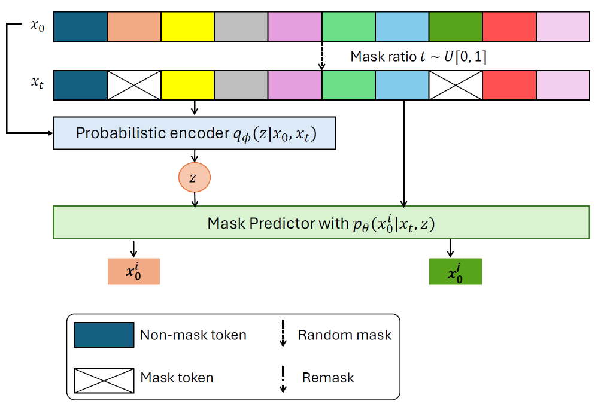
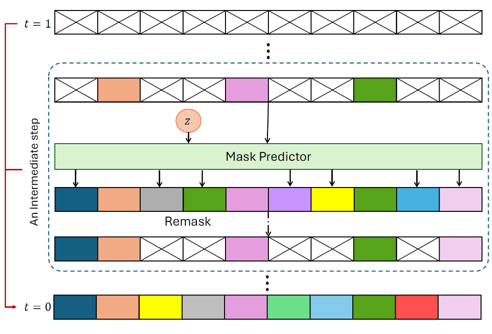
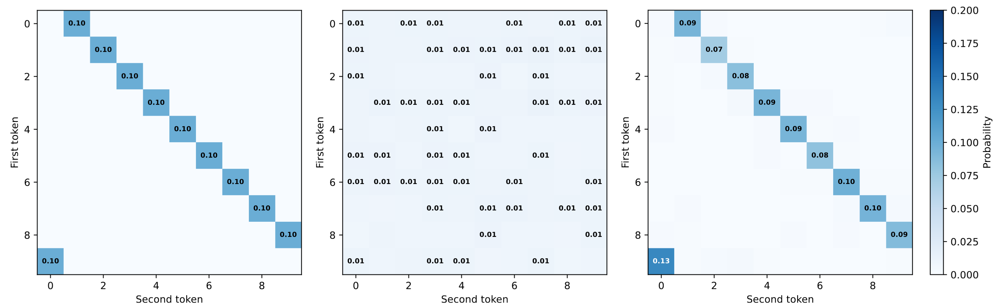
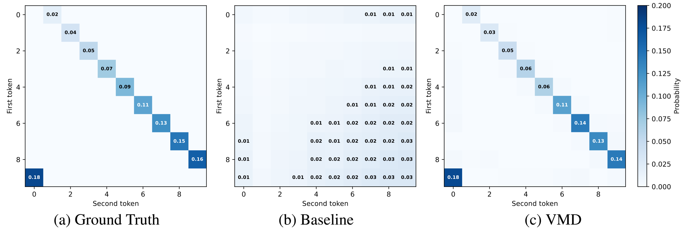

Masked diffusion models have recently emerged as a flexible framework for discrete generative modeling. However, a key limitation of standard masked diffusion is its inability to effectively capture dependencies among tokens that are predicted concurrently, leading to degraded generation quality when dependencies among tokens are important. To explicitly model dependencies among tokens, we propose Variational Masked Diffusion (VMD), a framework that introduces latent variables into the masked diffusion process. Through controlled experiments on synthetic datasets, we demonstrate that VMD successfully learns dependencies that conventional masked diffusion fails to capture. We further validate the effectiveness of our approach on Sudoku puzzles and text datasets, where learning of dependencies among tokens improves global consistency. Across these domains, VMD enhances both generation quality and dependency awareness, highlighting the value of integrating variational inference into masked diffusion.


The above figure shows examples with controlled synthetic data with 2 tokens. In the first row, we consider 10 two-token sequences: $\{(k, k+1 \mod 10) \}_{k = 0}^9$ and the data distribution is uniform on the support. In the second row, we consider a non-uniform distribution over the support, with $P((k, k+1 \mod 10)) = \frac{k+1}{55}$ for $k\! \in\!\{ 0,...,9\}$. In both settings, we see that standard masked diffusion fails to capture the dependency when decoding concurrently (one-step inference): when generating both tokens simultaneously, it degenerates to random guessing yielding around 10\% accuracy. In contrast, VMD is able to capture and generate correct pairs reliably.
| Method | D1 | D2 | |||||||
|---|---|---|---|---|---|---|---|---|---|
| B=2 NFE=4 |
B=2 NFE=2 |
B=1 NFE=4 |
B=1 NFE=1 |
B=2 NFE=4 |
B=2 NFE=2 |
B=1 NFE=4 |
B=1 NFE=1 |
||
| Acc. (↑) | Block MDM | 99.4% | 10.1% | 99.3% | 0.1% | 99.3% | 1.1% | 99.1% | 1.1% |
| VMD (ours) | 100% | 94.2% | 100% | 87.3% | 100% | 88.6% | 100% | 80.0% | |
| KL (↓) | Block MDM | 0.007 | 2.298 | 0.010 | 9.422 | 0.018 | 7.656 | 0.015 | 7.493 |
| VMD (ours) | 0.012 | 0.068 | 0.033 | 0.165 | 0.018 | 0.148 | 0.475 | 0.268 | |
Then we have examples with controlled synthetic data with 4 tokens. The first dataset (D1) contains 10 unique sequences: $\{(k, k+1, k+2, k+3 \mod 10) \}_{k = 0}^9$, which have strong token dependence. The second dataset (D2) is $\{(k, k+1, l, l+1 \mod 10) \}_{k, l = 0}^9$. When decoding one token at a time, both block diffusion and our variational formulation reach nearly 100% accuracy. However, when decoding tokens in parallel, the baseline collapses to random guessing, failing to capture inter-token dependencies. In contrast, our variational formulation maintains coherent generation and significantly outperforms the baseline across all configurations, demonstrating robust modeling of joint token dynamics even under one-step inference.
| Sudoku Exp | Top prob (Accuracy ↑) | Top prob margin (Accuracy ↑) | ||||
|---|---|---|---|---|---|---|
| Model | NFE=5 | NFE=10 | NFE=20 | NFE=5 | NFE=10 | NFE=20 |
| Baseline | 10.6% | 14.7% | 20.4% | 36.2% | 78.4% | 91.1% |
| VMD | 67.7% | 76.4% | 80.9% | 96.9% | 99.0% | 99.7% |
| Text Exp | PPL (↓) |
|---|---|
| Autoregressive | 2.603 |
| SEDD | ≤ 3.529 |
| MDLM | ≤ 3.498 |
| BD3-LM Block size 4 | ≤ 2.873 |
| BD3-LM Block size 8 | ≤ 3.126 |
| VMD Block size 4 (ours) | ≤ 2.858 |
| VMD Block size 8 (ours) | ≤ 3.125 |
We scale up our model and evaluate it on both Sudoku and text datasets. As shown in the two tables above, on Sudoku data where tokens exhibit strong structural correlations, our model significantly outperforms the baseline. On text data, where token diversity is higher and correlations are weaker, our model still achieves slightly better performance than existing baselines, demonstrating its robustness across domains with varying dependency strength.
@misc{zhang2025hierarchicalrectifiedflowmatching,
title={Hierarchical Rectified Flow Matching with Mini-Batch Couplings},
author={Yichi Zhang and Yici Yan and Alex Schwing and Zhizhen Zhao},
year={2025},
eprint={2507.13350},
archivePrefix={arXiv},
primaryClass={cs.CV},
url={https://arxiv.org/abs/2507.13350},
}